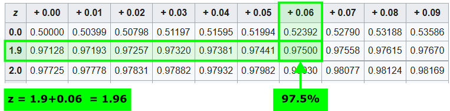

Metrics
P-Values
P-values are a central measure of modern inferential statistics, often mentioned in research studies and statistical analyses. You might frequently hear statements like "The p-value is less than 0.05," highlighting their importance in determining statistical significance.

Definition
A p-value is a probability metric that helps us determine the significance of our results.
Definition: P-Value
The p-Value quantifies the likelihood of obtaining a test statistic at least as extreme as the one observed, assuming the null hypothesis is true.
In simpler terms, it answers the question: If there is no real effect or difference, what is the probability of observing the data we have collected?
Code
import numpy as np
import pandas as pd
import plotly.express as px
# Generate the data for the normal distribution
x = np.linspace(-4, 4, 1000)
y = norm.pdf(x, 0, 1)
# Data for filling the upper 5% region
x_fill = np.linspace(norm.ppf(0.95, 0, 1), 4, 100)
y_fill = norm.pdf(x_fill, 0, 1)
# Create DataFrame for Plotly
df = pd.DataFrame({'x': x, 'y': y})
df_fill = pd.DataFrame({'x': x_fill, 'fill': y_fill})
# Create the plot
fig = px.line(df, x='x', y='y')
fig.add_trace(px.line(df_fill, x='x', y='fill').data[0])
# Adjust the plot
fig.data[0].update(line=dict(color='#00416E', width=2))
fig.data[1].update(
fill='tozeroy',
fillcolor='rgba(0, 65, 110, 0.4)',
line=dict(width=0),
)
# Add layout modifications
fig.update_layout(
xaxis_title_text='z',
yaxis_title_text='Probability Density',
title=dict(
text=f'<b><span style="font-size: 10pt">Null Distribtion vs Alternativ Value </span></b>',
),
showlegend=False,
)
# Add vertical line and annotations
limit_down = norm.ppf(0.95, 0, 1)
fig.add_vline(x=limit_down, line_dash="dash", annotation_text="H_A value", annotation_position="top right", line_color="#E87F2B", annotation_font_color="#E87F2B")
fig.add_annotation(x=-0, y=0.2, text="Null Distribution", showarrow=False, font=dict(color="#00416E"))
# Show the plot
fig.show()
Reminder
-
Null Hypothesis (H0): This is the default assumption that there is no effect or no difference. For example, when testing a new medication, the null hypothesis might state that the medication has no effect on patients compared to a placebo.
-
Alternative Hypothesis (H1 or HA): This hypothesis suggests that there is an effect or a difference. In the medication example, the alternative hypothesis would state that the medication does have an effect on patients.
In statistical testing, we often visualize these hypotheses using distributions:
-
Null Hypothesis Distribution: This represents the expected distribution of the test statistic if the null hypothesis is true. It is typically derived from theoretical probability distributions (like the normal distribution) and calculated using statistical formulas based on assumptions and degrees of freedom.
-
Alternative Hypothesis Distribution: This represents the distribution if the alternative hypothesis is true. However, in practice, we usually don't have a theoretical distribution for the alternative hypothesis because it's based on the actual effect we're trying to detect, which is unknown.Therefore, we collect data from experiments or studies, resulting in an observed test statistic (like a sample mean or proportion).
Interpretation
The method for calculating a p-value depends on the statistical test being used (e.g., t-test, chi-squared test, ANOVA). While the computational approaches vary, the interpretation of the p-value remains consistent: the p-value answers the fundamental question about the probability of observing the data under the null hypothesis.
-
Low P-Value (e.g., p < 0.05): Indicates that the observed data is unlikely under the null hypothesis. This leads us to consider rejecting the null hypothesis in favor of the alternative hypothesis.
-
High P-Value (e.g., p > 0.05): Suggests that the observed data is consistent with the null hypothesis. We do not have enough evidence to reject the null hypothesis.
Note
A low p-value does not prove that the alternative hypothesis is true; it merely indicates that the null hypothesis may not fully explain the observed data.
Limitations
-
Cannot Prove Hypotheses: P-values do not provide proof but rather evidence against the null hypothesis.
-
Dependence on Sample Size: Large samples can produce small p-values for trivial effects, while small samples might not detect significant effects.
-
Not Measures of Effect Size: A p-value does not indicate the magnitude of an effect.
Significance
To determine statistical significance, we compare the p-value to a predetermined significance level, often denoted as alpha (\(\alpha\)). If the p-value is less than \(\alpha\), we declare the result statistically significant. Common choices for \(\alpha\) are 0.05 or 0.01, representing a 5% or 1% threshold for significance.
It's crucial to recognize that the choice of \(\alpha\) is somewhat arbitrary and can influence whether a result is deemed significant. For instance, if we obtain a p-value of 0.03, setting \(\alpha\) at 0.05 would lead us to consider the result significant. However, if we set \(\alpha\) at 0.01, the same p-value would not be considered significant.
In essence, p-values help us assess how compatible our data is with the null hypothesis. By establishing a significance threshold, we can make informed decisions about whether our findings are likely due to random chance or if they indicate a genuine effect.
One-Tailed vs. Two-Tailed Tests
One-Tailed Test: Used when the research hypothesis predicts the direction of the effect (e.g., a new drug is expected to lower blood pressure). The critical region for rejecting the null hypothesis is entirely on one side of the distribution.
- Example: Testing if a new study technique increases test scores. The null hypothesis states there is no improvement, and the alternative hypothesis states there is an improvement. Only high test scores (one tail) are considered evidence against the null hypothesis.
-
In a one-tailed test with an alpha level of 0.05, the entire 5% significance level is in one tail.
Two-Tailed Test: Used when the research hypothesis does not predict the direction (e.g., the drug affects blood pressure but could either raise or lower it). The critical regions are on both ends of the distribution.
- Example: Testing if a new fertilizer affects plant growth. The null hypothesis states it has no effect, while the alternative hypothesis states it has an effect (could be an increase or decrease). Both unusually high and low plant growth measurements (both tails) are evidence against the null hypothesis.
- In a two-tailed test with the same alpha level, the 5% is split between both tails (2.5% in each).
Common Misconceptions
Understanding what p-values do not represent is crucial to avoid misinterpretations.
-
Misconception: A p-value of 0.02 means there's a 2% chance the effect is present in the population.
- Correction: A p-value of 0.02 means there's a 2% probability of observing the test statistic (or something more extreme) assuming the null hypothesis is true. It does not indicate the proportion of the population exhibiting the effect.
-
Misconception: A p-value of 0.02 means there's a 98% chance that the sample statistic equals the population parameter.
- Correction: The p-value does not provide the probability that the sample statistic equals the population parameter. It only assesses the likelihood of the observed data under the null hypothesis.
-
Misconception: A p-value smaller than the threshold confirms the effect is real.
- Correction: A small p-value suggests that the observed data is unlikely under the null hypothesis, but it does not prove the effect is real. Other factors like sample size, data quality, and experimental design also play significant roles.
-
Misconception: A large p-value means the null hypothesis is true.
- Correction: A large p-value indicates that the data is consistent with the null hypothesis, but it doesn't prove that the null hypothesis is true. It might also be due to insufficient sample size or variability in the data.
Z-Score
Every statistical distribution can be associated with a set of p-values because they can all be interpreted in terms of probability. However, some distributions are more prominent due to their frequent use in statistical analyses. The most significant of these is the normal distribution, also known as the bell curve or Gaussian distribution. Its importance is so profound that it's fundamental in various fields, including statistics, physics, and social sciences.
Let's begin by exploring z-scores and the proportion of data within a normal distribution. The normal distribution is symmetrical around the mean, and its standard deviation determines the spread of the data. This property allows us to make precise statements about the proportion of data falling within certain ranges.
Example: Heights of Adult Women
Suppose the average height of adult women in a country is 165 cm, with a standard deviation of 6.35 cm.
-
Within 1 Standard Deviation (±1 SD): Heights between 158.65 cm and 171.35 cm (165 cm ± 6.35 cm). Approximately 68.3% of women have heights within this range.
-
Within 2 Standard Deviations (±2 SD): Heights between 152.3 cm and 177.7 cm (165 cm ± 12.7 cm). About 95.5% of women fall within this range.
-
Within 3 Standard Deviations (±3 SD): Heights between 145.95 cm and 184.05 cm (165 cm ± 19.05 cm). Approximately 99.7% of women are within this range.
These percentages are known as the Empirical Rule or the 68-95-99.7 rule and are fundamental properties of the normal distribution. Memorizing these values can greatly enhance your understanding and efficiency when working with normally distributed data.
Definition: Empirical Rule

Common P-Value and Z-Score Pairs
Understanding the relationship between p-values and z-scores is crucial for hypothesis testing. Here are some commonly used pairs that are worth committing to memory.
-
One-Tailed Test
P-Value Z-Score 0.05 1.645 0.01 2.33 0.001 3.09 Example: P-Value = 0.05: Z-Score ≈ 1.645
This means there's a 5% chance of observing a test statistic at least as extreme as 1.645 standard deviations above the mean, assuming the null hypothesis is true.
-
Two-Tailed Test
P-Value Z-Score 0.05 ±1.96 0.01 ±2.576 0.001 ±3.291 Example: P-Value = 0.05: Z-Score ≈ ±1.96
There's a 5% chance of observing a test statistic more than 1.96 standard deviations away from the mean in either direction.
Example: Exam Scores
Imagine a standardized test where the average score is 500, with a standard deviation of 100.
In a one-tailed test, we're interested in deviations in one direction - for example, scores significantly above the mean. The Critical Z-Score for a one-tailed test at the 5% significance level, the critical z-score is approximately 1.645.
- Critical Score Calculation:
- Interpretation: Any score above 664.5 is considered statistically significant at the 5% level in a one-tailed test.
z-Table
However, these common p-value and z-score pairs are not always sufficient for every analysis. For more precise probability calculations or for confidence levels not listed in standard tables, you can use z-tables. A z-table, also known as the standard normal distribution table, provides the cumulative probabilities associated with z-scores in a standard normal distribution. By using the z-table, you can determine the probability that a data point falls below a specific z-score or find the z-score corresponding to a particular cumulative probability. This table is essential for various statistical analyses, including hypothesis testing and constructing confidence intervals, as it allows for the translation of z-scores into meaningful probability values. Mastery of the z-table enhances the ability to interpret and apply statistical findings accurately.
There are many sources for z-tables around the internet. One well-organized version is available on Wikipedia.
The table basically consists of two areas:
- z-values (divided into rows and columns): need to be summed up (row + column)
- Cumulative probabilities: the values in the table
The structure of the table can be read as follows:

Using the z-table
It is not sufficient to know the significance level \(\alpha = 0.05\) for determining the z-value; we also need to know if we are going to perform a one-tailed or two-tailed test. For a one-tailed test, we need to look up the cumulative probability of \(95\%\). For a two-tailed test, we need to split the significance level of \(5\%\) and look for the critical values corresponding to \(2.5\%\) and \(97.5\%\). Since the normal distribution is symmetric around zero, both critical values for the two-tailed test will be the same.
Confidence Interval
While z-scores are instrumental in understanding the position of a data point within a distribution, confidence intervals provide a range within which we expect a population parameter (like the mean) to lie, based on our sample data. Integrating the concept of confidence intervals with z-scores enhances our ability to make informed statistical inferences.
What is a Confidence Interval?
A confidence interval (CI) is a range of values derived from sample data that is likely to contain the true population parameter. The confidence level, typically expressed as a percentage (e.g., 95%), represents the degree of certainty that the interval captures the parameter.
- Confidence Level: The probability that the confidence interval contains the true parameter in repeated sampling.
- Interval Width: Reflects the precision of the estimate; narrower intervals indicate higher precision.
- Dependence on Sample Size and Variability: Larger sample sizes and lower variability lead to narrower confidence intervals.
Calculating Confidence Intervals Using Z-Scores
In the context of the normal distribution, z-scores play a crucial role in constructing confidence intervals for the population mean when the population standard deviation is known. Specifically, the z-score determines the number of standard deviations to extend from the sample mean to achieve the desired confidence level.
Definition: Confidence Interval
When the population standard deviation (\(\sigma\)) is known, the confidence interval for the population mean (\(\mu\)) can be calculated using the following formula:
with
- \(\bar{x}\): Sample mean
- \(z\): Critical value from the standard normal distribution corresponding to the desired confidence level
- \(\sigma\): Population standard deviation
- \(n\): Sample size
Exmple: Estimating Average Height with Confidence Interval
Using the earlier example of adult women’s heights:
- Sample Size (\(n\)): 100
- Sample Mean (\(\bar{x}\)): 165 cm
- Population Standard Deviation (\(\sigma\)): 6.35 cm
- Confidence Level: 95% → \(\alpha = 0.05\)
Calculate the confidence interval:
- Critical Value (\(z_{(1-\frac{\alpha}{2})}\)): For a 95% confidence level, \(z_{(1-\frac{\alpha}{2})} \approx 1.96\).
-
Standard Error:
\[ \frac{\sigma}{\sqrt{n}}= \frac{6.35}{\sqrt{100}} = 0.635 cm \] -
Margin of Error:
\[ z_{(1-\frac{\alpha}{2})} \frac{\sigma}{\sqrt{n}} = 1.96 \times 0.635 \approx 1.245 cm \] -
Confidence Interval: \(165 \pm 1.245\)
\[ \left[163.755 cm, 166.245 cm\right] \]
Interpretation: We are 95% confident that the true average height of adult women in the country lies between 163.755 cm and 166.245 cm.
Factors Affecting Confidence Interval Width
Several factors influence the width of a confidence interval:
-
Sample Size (\(n\)):
- Larger Sample Size: Leads to a smaller standard error, resulting in a narrower confidence interval.
- Smaller Sample Size: Increases the standard error, leading to a wider confidence interval.
-
Variability in Data (\(\sigma\)):
- Lower Variability: Decreases the standard error, narrowing the confidence interval.
- Higher Variability: Increases the standard error, widening the confidence interval.
-
Confidence Level:
- Higher Confidence Level (e.g., 99%): Requires a larger critical value, resulting in a wider interval.
- Lower Confidence Level (e.g., 90%): Uses a smaller critical value, leading to a narrower interval.
Degree of Freedom
Example: DoF Mean
Given are four variables: \(A\), \(B\), \(C\), and \(D\) with an average (mean) of \(50\). Is it possible to determine the exact values of \(A\), \(B\), \(C\), and \(D\)?
No, it's not. Knowing only the mean and the number of variables, there are infinitely many combinations of values that satisfy the condition. The mean is calculated as:
This equation alone isn't enough to solve for the individual variables because there are infinitely many solutions.
Now, suppose the values for \(A\), \(B\) and \(C\) are given.
- A = 40
- B = 55
- C = 60
Can we now calculate \(D\)? Yes, by substituting the values into the variables
Once we know the mean and three of the four variables, the fourth variable is completely determined. It has no freedom to vary independently; it's dependent on the others. So, in this scenario, we have three degrees of freedom. That's because we can freely choose any values for \(A\), \(B\) and \(C\), but \(D\) is constrained by the mean.
Now, Suppose we have a population where the true mean (\( \mu \)) is known to be \(50\). We take a random sample of four observations: \(A\), \(B\), \(C\), and \(D\). What are the degrees of freedom in our sample?
Answer: We have four degrees of freedom.
Even though we know the population mean, the sample mean (\( \bar{x} \)) calculated from A, B, C, and D may not be exactly 50 due to sampling variability. The sample values can vary freely; knowing the population mean does not impose a constraint on the individual sample values. Therefore, all four sample observations have the freedom to vary independently.
So, based on this example, the Degree of Freedom (DoF) can be defined as:
Definition: Degree of Freedom
Degrees of freedom are the number of independent values that a statistical analysis can estimate. You can also think of it as the number of values that are free to vary as you estimate parameters.
-- Jim Frost - Degrees of Freedom in Statistics
In statistics the degrees of freedom are necessary to provide unbiased estimates of population parameters which is crucial for reliable statistical inference. Furthermore it affects the shape of statistical distributions used in hypothesis testing, influencing critical values and p-values.
In following test we will conduct, the degree of freedom will depend on the sample size and can be calculated as:
Errors
In statistical hypothesis testing, we make decisions based on sample data, which can lead to two types of errors due to randomness and variability.
Definition: Types of Error
In statistical testing, there are two types of errors:
- Type I Error (False Positive): Rejecting the null hypothesis (\( H_0 \)) when it is actually true.
- Type II Error (False Negative): Failing to reject the null hypothesis when it is actually false.
Example: Error Type
A factory produces electronic components that must meet specific quality standards before they are shipped to customers. Each component is tested to determine whether it is defective or not.
- Null Hypothesis (\( H_0 \)): The component is not defective; it meets quality standards.
- Alternative Hypothesis (\( H_A \)): The component is defective; it does not meet quality standards.
Type I Error (False Positive)
A component that functions perfectly is tested and, due to a measurement error or overly strict testing criteria, is labeled as defective.
Consequence:
- Increased Costs: Good components are unnecessarily scrapped or reworked, leading to wasted materials and labor.
- Reduced Efficiency: Production slows down due to re-inspection and additional quality checks.
Type II Error (False Negative)
A component with a subtle flaw passes the quality test and is shipped to customers.
Consequence:
- Customer Dissatisfaction: Defective products may fail during use, leading to returns and complaints.
- Reputation Damage: Consistent quality issues can harm the company's reputation.
- Safety Risks: In critical applications, defective components could cause equipment failure or safety hazards.
Error Probability
The probability of a Type I Error is equal to the significance level (\( \alpha \)), while on the other side, the probability of the Type II Error is denoted as (\( \beta \)). Reducing the probability of a Type I error (\( \alpha \)) increases the probability of a Type II error (\( \beta \)), and vice versa.
| Table of Error Types | Null Hypothesis (H0) is | ||
|---|---|---|---|
| True | False | ||
| Decision about Null Hypothesis (H0) | Not Reject | Correct Decision (True Negative) (Probability = 1 − α) |
Type II Error (False Negative) (Probability = β) |
| Reject | Type I Error (False Positive) (Probability = α) |
Correct Decision (True Positive) (Probability = 1 − β) |
|